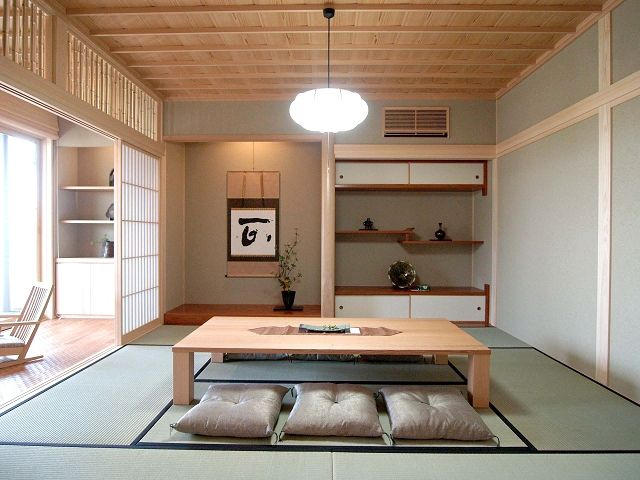
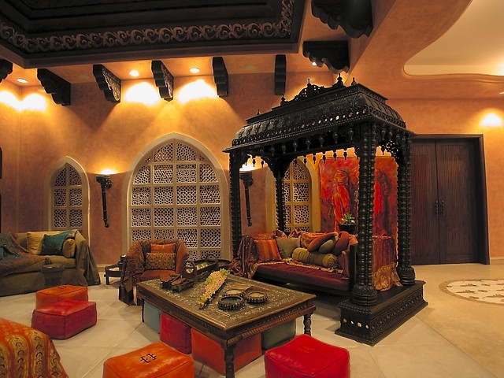

Jepang
 Desain ruangan yang didominasi dengan bahan dasar kayu ini merupakan salah satu ciri khas dari ruangan rumah-rumah dari negeri matahari terbit ini. Terkesan minimalis namun tetap enak dipandang membuat kesan nyaman untuk dihuni. Peletakan barang sampai furnitur yang digunakan diatur sedemikian rupa untuk menciptakan suasana ketenangan atau nilai zen.
India
 Kental akan nilai budaya didalamnya, design interior satu ini mampu memikat minat para penggemar Bollywood. Bagaimana tidak?, Ruangan megah dengan berisikan furnitur elegan namun tidak meninggalkan kultur budaya leluhur didalamnya menciptakan sebuah nilai tersendiri yang khas.
Timur Tengah
 Timur Tengah, terkenal dengan gaya arsitekturnya yang “halus” dan ikonik. Timur tengah juga populer dengan ide dekorasi
rumah yang berwarna-warni, yang terinspirasi dari bunga dan rempah-rempah yang indah; kayu manis, cendana, cengkeh dan
kapulaga. Menjadi sebuah bangunan fantastis; perpaduan asketisme kehidupan beragama, semua bercampur melahirkan gaya
interior dan arsitektur yang benar-benar khas.
Timur Tengah, terkenal dengan gaya arsitekturnya yang “halus” dan ikonik. Timur tengah juga populer dengan ide dekorasi
rumah yang berwarna-warni, yang terinspirasi dari bunga dan rempah-rempah yang indah; kayu manis, cendana, cengkeh dan
kapulaga. Menjadi sebuah bangunan fantastis; perpaduan asketisme kehidupan beragama, semua bercampur melahirkan gaya
interior dan arsitektur yang benar-benar khas.